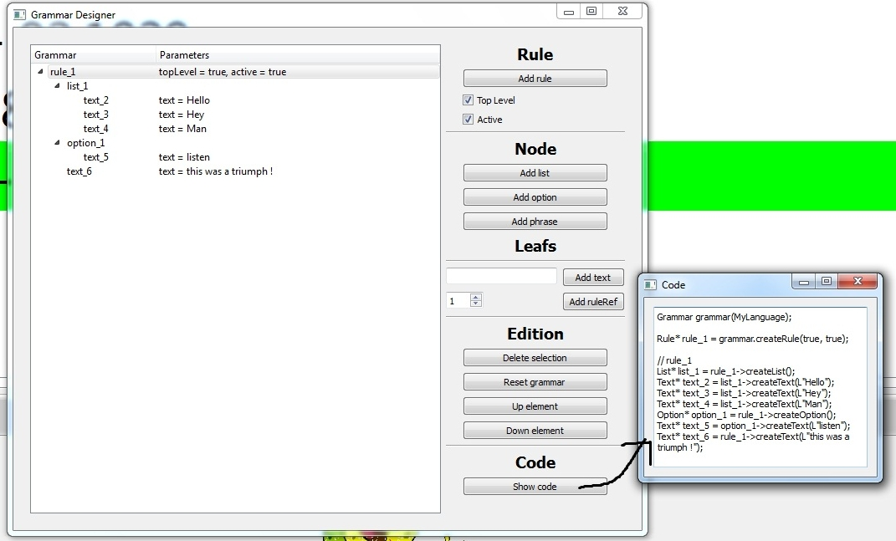
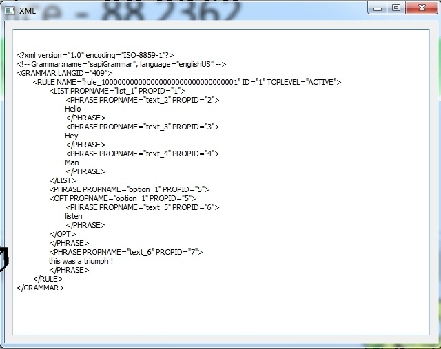
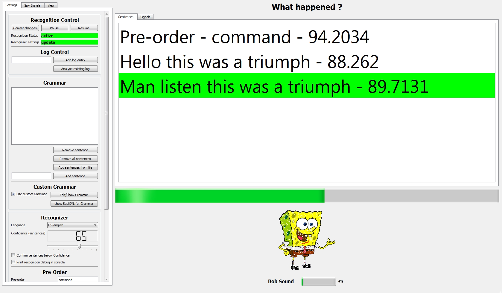
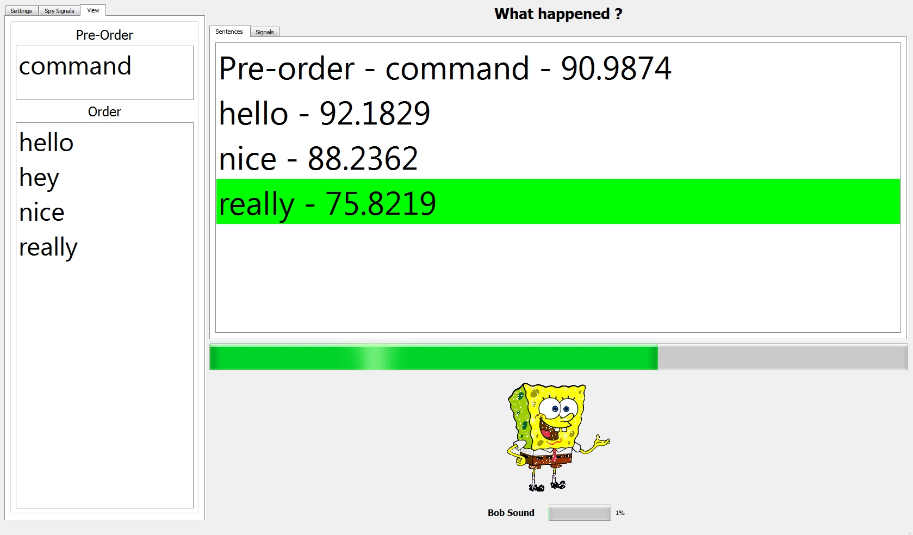
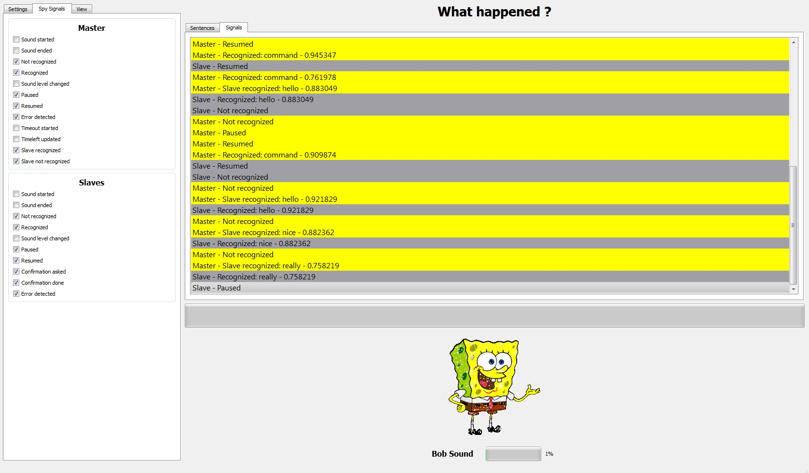

QtVocal¶
Afin de valider/tester QtVocal ainsi que de permettre à ses utilisateurs de comprendre comment il fonctionne, j’ai développé une application utilisant toutes ses fonctionnalités baptisée sobrement BobRecognizer.
Dans celle-ci, Bob nous accompagne afin de reconnaitre des commandes vocales. Les captures d’écrans présentées ici utilisent l’anglais (le français est également supporté) comme langage reconnu.
L’application peut reconnaitre une liste de mots ou carrément un langage (décrit par une grammaire) ! Il est possible d’obtenir le fichier XML (certifié valide pour la SpeechAPI) correspondant à cette grammaire ou encore le code C++ permettant de la générer. Il est possible d’espionner les signaux Qt émis par QtVocal.
Un score est attribué à chaque reconnaissance (entre 0 et 100).
Un préordre doit être reconnu avant de commencer la reconnaissance vocale. Ici, il s’agit simplement du mot “command”.
L’éditeur de grammaire interactif et le code permettant de la générer
{kind=link}
le fichier XML correspondant à la grammaire créée précédemment.
{kind=link}
Une reconnaissance utilisant ce langage.
{kind=link}
Une liste de mots reconnue
{kind=link}
Signaux émis par QtVocal
{kind=link}